ENIAC 于1946年交付使用，采用十进制运算，含有18000多个电子管，耗电量高达150千瓦，重量达到30吨，占地面积为1500平方英尺，每秒可进行5000多次的加法运算。
1946年冯·诺依曼设计了一台存储程序的计算机ISA

以下是个阶段硬件技术对计算机的影响
| 发展阶段 | 时间 | 硬件技术 | 速度(次/每秒) |
|---|---|---|---|
| 一 | 1946-1957 | 电子管 | 40000 |
| 二 | 1958-1964 | 晶体管 | 200000 |
| 三 | 1965-1971 | 中、小规模集成电路 | 1000000 |
| 四 | 1972-1977 | 大规模集成电路 | 10000000 |
| 五 | 1978-现在 | 超大规模集成电路 | 100000000 |
集成电路技术把计算机的控制单元和算逻单元集成到一个芯片上，制成了微处理器芯片。
Moore定律：微芯片上集成的晶体管数每3年翻两番
Intel典型产品如下;
| 产品名 | 位数 | 发布时间 | 晶体管数 |
|---|---|---|---|
| 8080 | 8 | 1974 | |
| 8086 | 16 | 1978 | 2.9万 |
| 8088 | 16 | 1979 | 2.9万 |
| 80286 | 16 | 1982 | 13.4万 |
| 80386 | 32 | 1985 | 27.5万 |
| 80486 | 32 | 1989 | 120万 |
| Pentium | 32 | 1993 | 310万 |
| Pentium Pro | 64 | 1995 | 550万 |
| Pentium Ⅱ | 64 | 1997 | 750万 |
| Pentium Ⅲ | 64 | 1999 | 950万 |
| Pentium Ⅳ | 64 | 2000 | 4200万 |
21世纪微处理器的发展重点：
早期（机器语言）
软件发展有以下特点
pass
pass
pass
pass
pass
pass
pass
计算机具有类似人脑的一些智能功能，要求计算机的速度要足够块
芯片集成度的提高时受以下三方面的限制